The notebook
I first heard the word “scholarship” at fifteen. I wrote down everything I could find. I haven't stopped taking notes since.
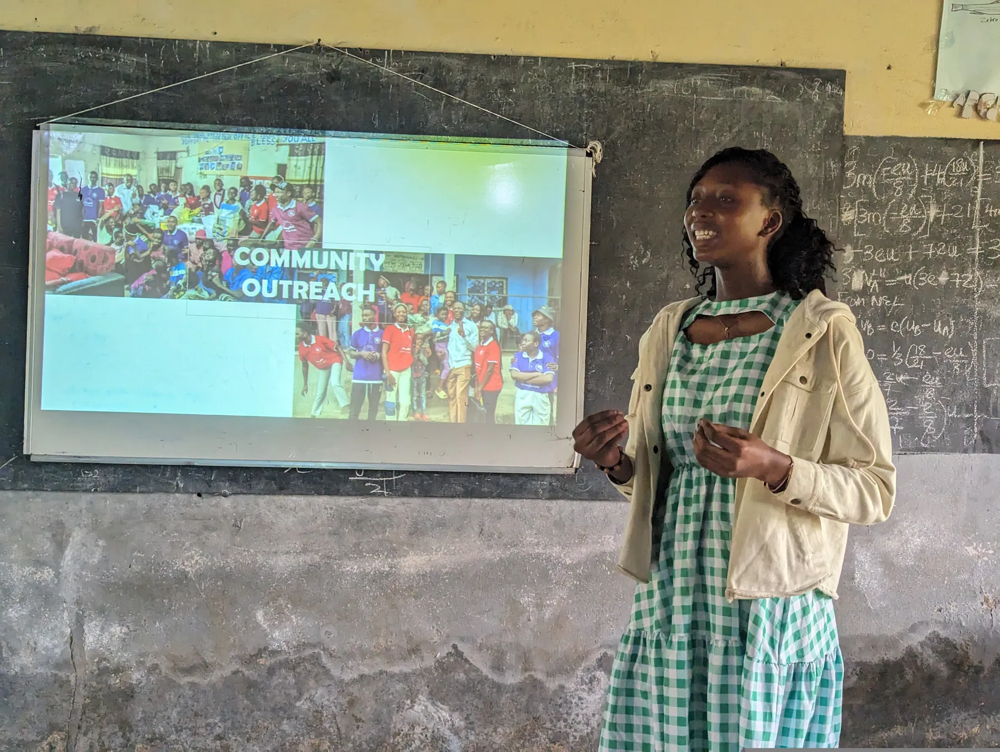
Using education to expand access to global opportunities for highly talented, underserved young people.
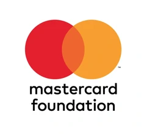
Mastercard Foundation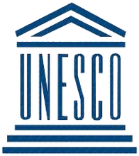
UNESCO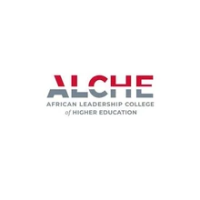
ALCHE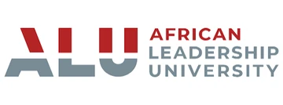
African Leadership University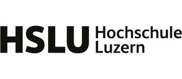
HSLU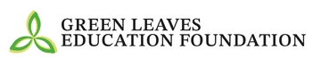
Green Leaves Education Foundation
I'm a social entrepreneur, a Mastercard Foundation Scholar at the African Leadership College of Higher Education, and a young person interested in the role education can play in expanding access to opportunity.
My work is centred on a belief I've carried for a long time: education should be an equalizer. Having navigated the challenges of accessing international education myself, I'm interested in changing how young people discover, prepare for, and access these opportunities.
Today, I build initiatives that connect highly talented, underserved students with the information, resources, mentorship, and networks they need to pursue their ambitions.
Sandrine
Read the full storyThe habits and ideas behind the work, in the order they arrived.
I first heard the word “scholarship” at fifteen. I wrote down everything I could find. I haven't stopped taking notes since.
How many young people never get to see what is possible? It is the question that shapes every project I choose to build.
I believe the best rooms are the ones where young people are allowed to lead, not just listen. I try to build more of them.
A young person's circumstances should never determine the scale of their future. My work is dedicated to expanding access to global opportunities so that brilliant, underserved students can build limitless futures.
A snapshot across classrooms, community programmes, and international advocacy.
Figures reflect work across TIC Foundation, Knowledge Center, the Global Scholars Program, and the UNESCO SDG4 Youth & Student Network.
Updated as the work moves. The latest from advocacy, building, and the day-to-day.
Building Eureka, a platform that decentralises access to opportunity for people who lack it.
Leading the Global Scholars Program pilot, a programme in Cameroon guiding talented, underserved students through elite college admissions around the world.
Mastercard Foundation Scholar at ALCHE, Mauritius, studying Entrepreneurial Leadership.
Student representative for Africa on the UNESCO SDG4 Youth & Student Network, working with UNESCO to advance SDG4.
Classrooms, community programmes, and the rooms where education policy gets made.
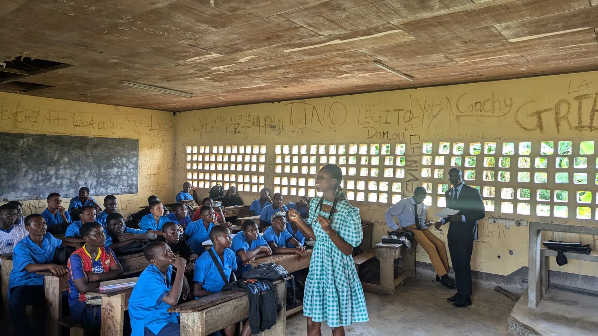
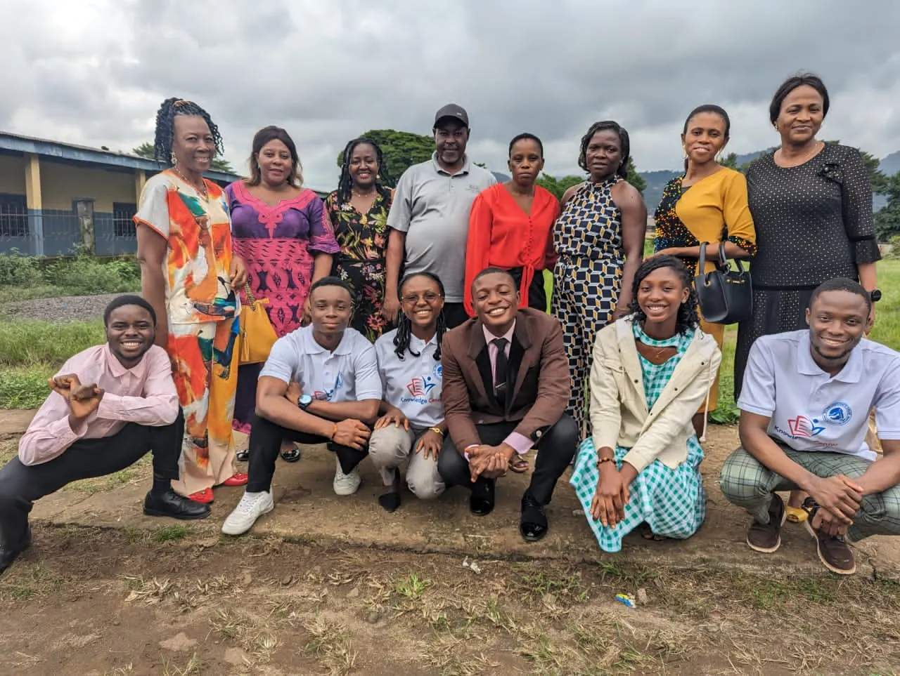
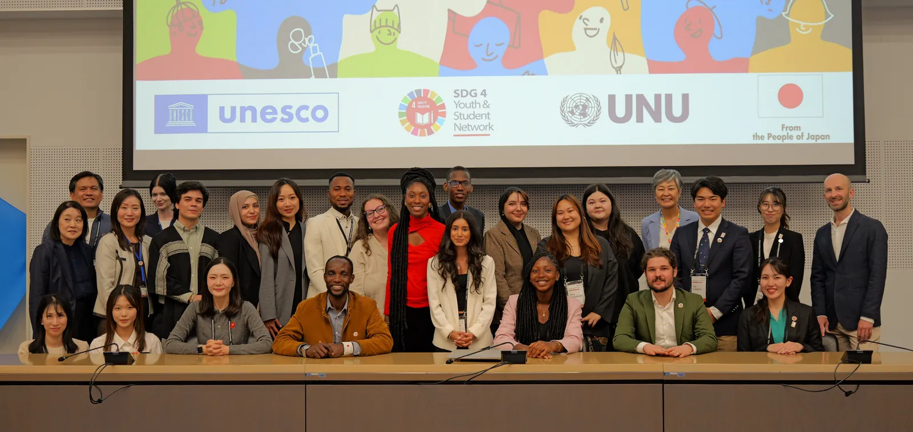
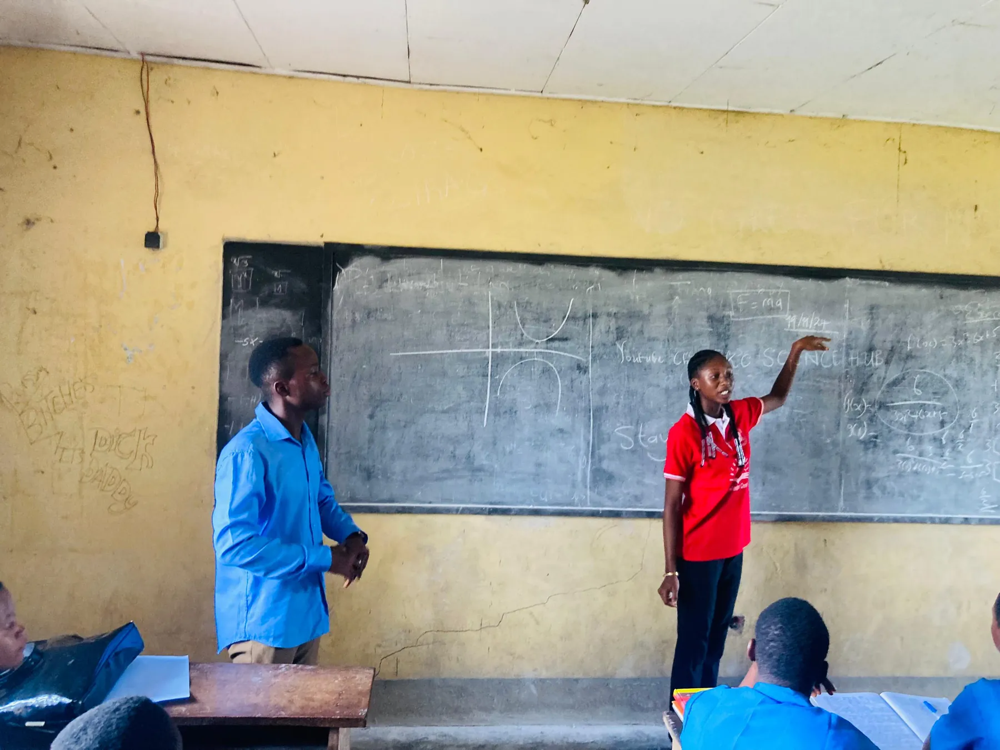
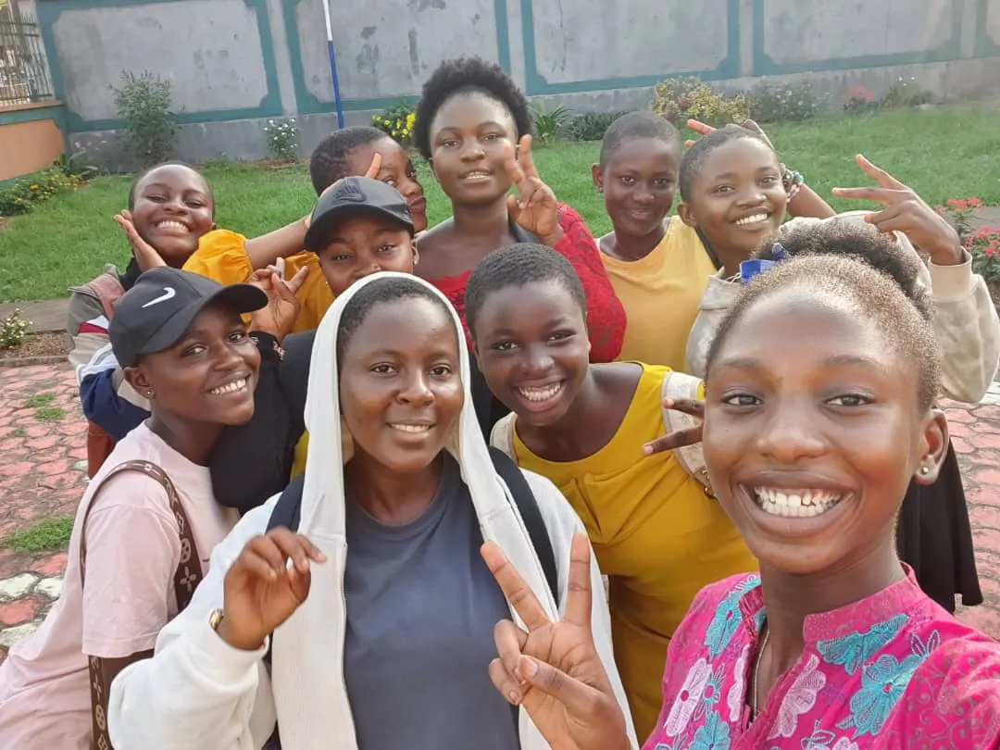
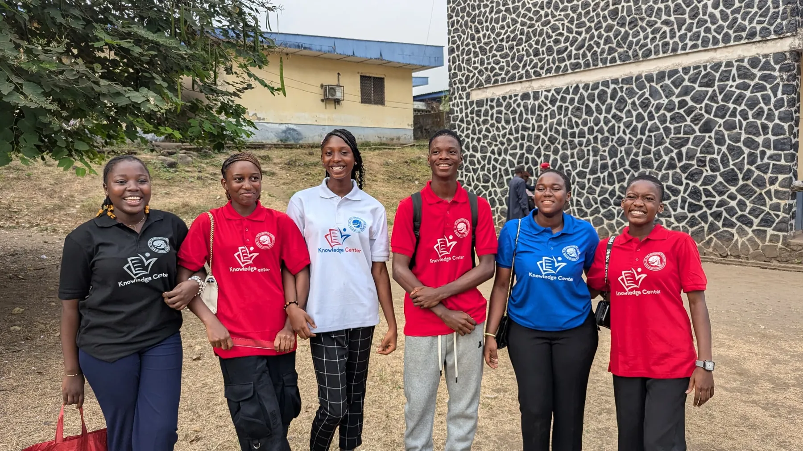
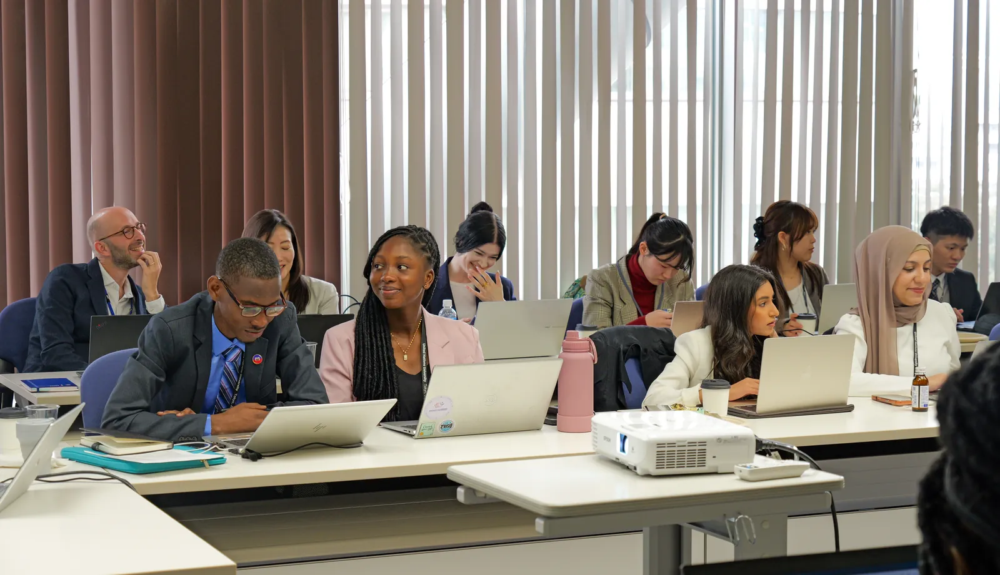
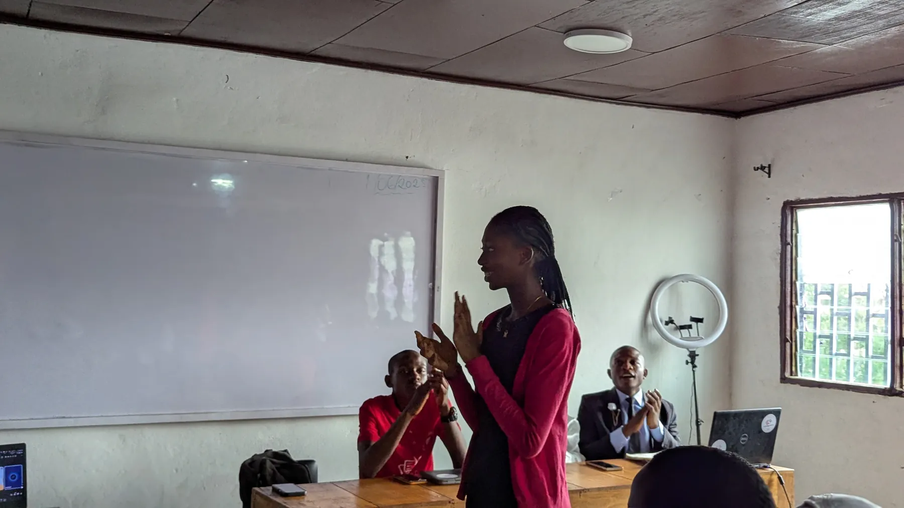
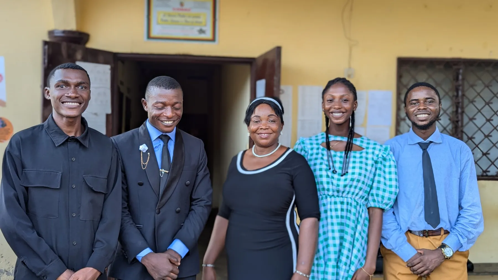
Organisations I've collaborated with, spoken at, or been affiliated with.
For speaking, partnerships, press, or a conversation about education and opportunity, the fastest way to reach me is a note.
Usually within 3–5 working days.